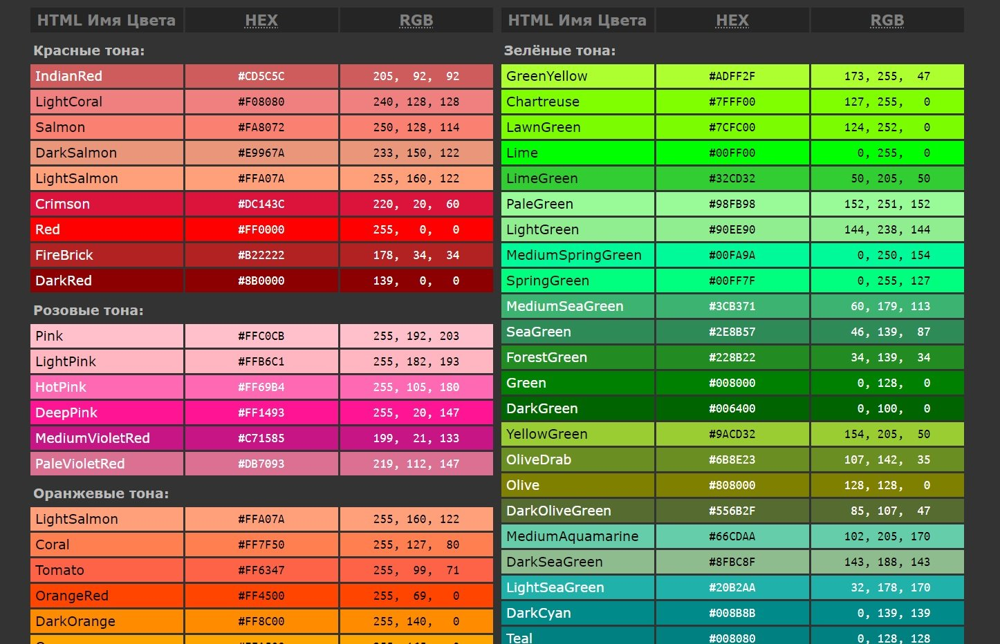

Вашему вниманию предлагается палитра цветов, рекомендуемых для экранного дизайна. Безопасные цвета всегда неизменны при переходе от одного браузера к другому, от одного монитора к другому, или от одной платформы к другой, с их различными разрешениями и возможностями цветопередачи.
Если веб-браузер не в состоянии правильно отобразить тот или иной цвет, то он пытается подобрать похожий или смешивает несколько соседних цветов. Может так случиться, что исходный цвет будет замещён чем-то совершенно неподходящим.
Сегодня уже весьма спорна целесообразность использования безопасной палитры, однако используя её, вы будете уверены, что цвета будут выглядеть неизменно хорошо и без искажений даже на очень старых компьютерах, вплоть до 8-битного режима отображения с поддержкой всего 256 цветов.
Безопасные цвета были выведены математически, а не потому, что они кому-то больше пришлись по душе. Для получения безопасного цвета из Красного, Зелёного и Синего, нужно использовать только данные десятичные значения: 0, 51, 102, 153, 204, 255 — и никакие другие. Каждое из трёх шестнадцатеричных значений не должно отличаться от 00, 33, 66, 99, CC, FF.
